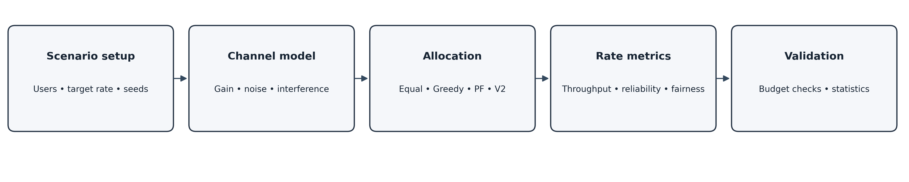
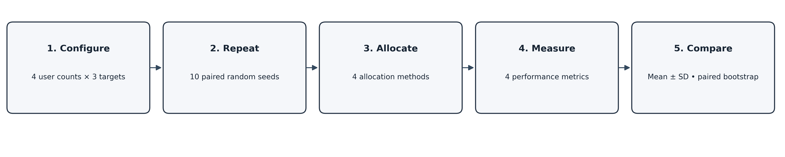
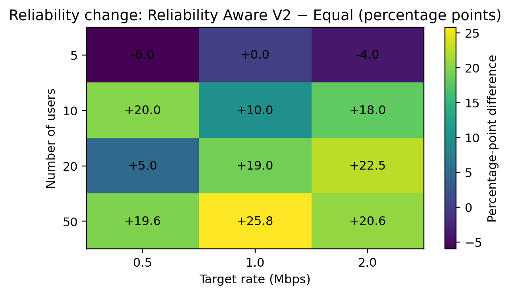
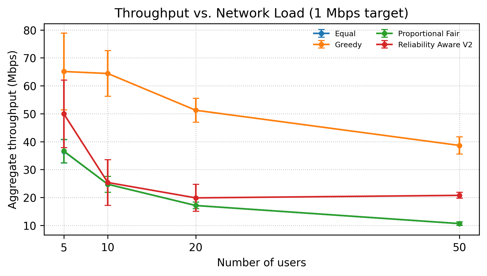

Aggregate throughput by user population
Compare four deterministic allocation strategies across the selected target rate.
Compare four deterministic allocation strategies across the selected target rate.
Selected target-rate comparison
Change in target-rate reliability, percentage points.
Methods evaluated in the experiment
Mean and standard deviation across the archived ten-seed simulation runs.
| Users | Target | Method | Throughput | Reliability | Min. rate | Jain index |
|---|
Divides available bandwidth and transmission power evenly among active users. Serves as the baseline.
Assigns each bandwidth chunk to the user with the largest marginal aggregate-throughput increase.
Uses logarithmic rate utility to balance aggregate performance and user rate distribution. The current implementation often matches Equal and needs a code-level audit.
Estimates per-user bandwidth needs against a target rate, prioritizes feasible users under the bandwidth budget, then allocates remaining chunks greedily.
Scenario input → channel model → allocator → rate evaluation → validation and analysis.

Configure 4 user counts × 3 targets, repeat 10 paired seeds, execute four methods, measure four metrics, then compare.

Positive values indicate higher target-rate reliability for V2 compared with Equal.

Means and standard deviations for the 1.0 Mbps target.
